How 16 countries treated their largest informal settlements: what policy was written, what actually happened on the ground, and whether it worked. 49 standout cases across 31 countries — several per country where they exist — with population estimates, build materials, main issues, the applied policy, its core principles and participation techniques, and the de facto outcome. Click any image to open the full-resolution source; click the map pin to open the location in Google Maps. Full Harvard-style references with live links at the bottom of the page.
| Country | Location & slum | Image | People (est.) | Build material | Main issues | Policy applied | Core policy principles | Participation techniques | De facto execution — consequences |
|---|---|---|---|---|---|---|---|---|---|
| Brazil | Rocinha favela, Rio de Janeiro 📍 Google Maps |
Pelago | 150k–200k, under 2 km² | Brick, concrete, multi-storey self-built | No sanitation in parts, landslide risk, gang control, extreme density | Favela-Bairro (1994), PAC Favelas (2007), Morar Carioca (2010) — in-situ upgrading [1][2] | Integrate favela into formal city in place; bring formal-city services to residents; minimum infrastructure package plus social services; "welfare to work" [2][43] | Design contests per favela; residents vote on intervention proposals; neighbourhood associations as channel and service providers; on-site dialogues with favela leaders; iBase-contracted participatory meetings (cut 2013) [2][43] | MixedWorks built, then abandoned. No maintenance, no continuous state policy. Programs restart under new names, stop again. Political crisis delays essential works; resident trust eroded after decades of neglect. |
| Brazil | Complexo do Alemão 📍 Google Maps |
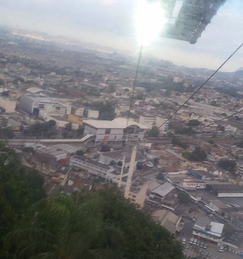 Tripadvisor |
~60k–70k | Brick + concrete self-built, steep hills | Gang control, violence, neglect after showcase works | PAC (2007–): cable car 2011, roads, sports facilities; Novo PAC 2026 relaunch (R$210m) [50][51] | Showcase mega-projects on top of upgrading; transit-led visibility | Rio+ILPe social programming during PAC; resident trust eroded as works stalled | Showcase decayCable car idle 9 years (2016–25), now R$115m renovation to restart; unfinished works finally re-funded 2026. Symbol of Olympic-era promises abandoned. |
| Brazil | Heliópolis, São Paulo 📍 Google Maps |
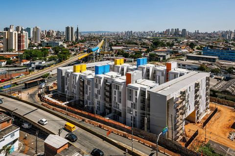 Mies Crown Hall Americas Prize |
~100k (largest favela in SP) | Brick + concrete, mixed self-built and new housing blocks | Density, no tenure, flooding pockets | City urbanization programme since 1980s; 2001 Master Plan pledge to urbanize one third of favelas; new housing blocks + CEU facilities [52] | Progressive urbanization through persistent community action | Strong residents' association (UNAS); income-generation projects; community participation drove investment sequence | In progressMost urbanized big favela in SP — services, schools, housing projects arrived; sustainability depends on community cohesion, trust and collaboration. |
| Brazil | Paraisópolis, São Paulo 📍 Google Maps |
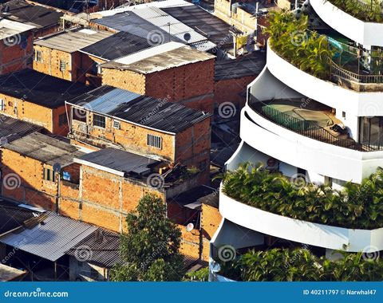 Dreamstime |
~100k | Brick + concrete, self-built beside wealthy Morumbi | Extreme inequality contrast, landslide risk, density | Urbanization programme: streets, drainage, housing, public equipment since 2000s [52] | Urbanization through negotiation wall-to-wall with formal city | Community committees co-decided works sequence; local labour | Mostly upgradedCore urbanized with paved streets and services; risk zones remain; new public spaces neglected where community involvement weak. |
| Colombia | Comuna 13 + comunas 1–2, Medellín 📍 Google Maps |
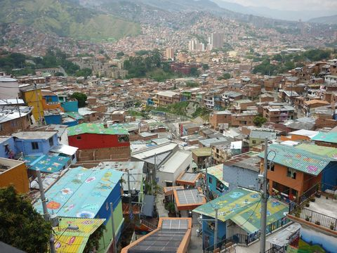 Ecocity Builders |
Comuna 13 ~130k; comunas 1–2 ~300k+ | Brick, block, self-built hillside housing | Highest homicide rate in city (2004), disconnection from city, informality | PUI Integral Urban Project (2004–2015), MetroCable, library parks — "social urbanism" [3][4] | Social urbanism: most-affected neighbourhoods first; integrated mobility + public space + facilities + housing; education and culture as equity tools [3][4] | Participatory budgeting of project shares; neighbourhood workshops and roundtables; youth co-design of parks and libraries; local labour hired for works [3][4] | SuccessHomicides fell sharply, cable car + services connected the hills to the city, global model. Critique: gentrification pressure, displacement of poorest, maintenance gaps. |
| Colombia | Ciudad Bolívar + TransMiCable, Bogotá 📍 Google Maps |
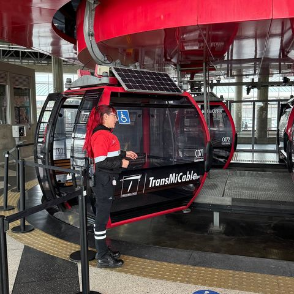 Tripadvisor |
~700k district | Brick block self-built hillsides | Poverty, isolation, steep terrain | TransMiCable cable transit (2019) + public space network, following Medellín model [4] | Transit-led integration of peripheral districts | Community workshops on station design; local operators hired | MixedTravel time to work cut sharply; district still poorest in city — mobility without enough jobs and services. |
| Kenya | Kibera, Nairobi 📍 Google Maps |
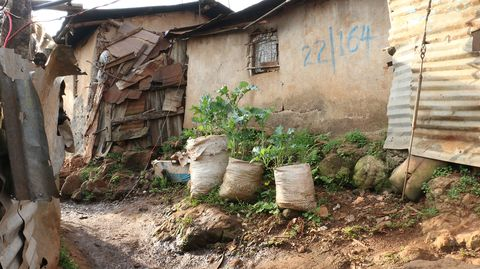 Political Perspectives |
250k official; up to 1M contested | Mud walls, timber, corrugated tin sheets | Extreme density, no tenure, "flying toilets", flooding, rent extraction by absentee structure-owners | KENSUP / KSUP with UN-Habitat (2000s): Lang'ata decanting site, new apartment blocks [5][6] | Participatory communication written into KENSUP design; tenure security; no-eviction upgrading [44] | Community dialogue forums, village-level committees, resident-run house enumerations; de facto "voice without empowerment" — structure owners dominate [44] | PartialOnly a few thousand rehoused. Decanting site disrupted social networks, ownership disputes + corruption stalled later phases. Most of Kibera remains as it was. |
| Kenya | Mathare, Nairobi 📍 Google Maps |
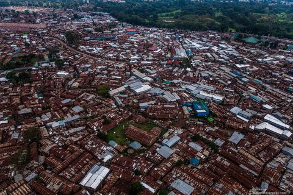 The Dark Atlas |
~200k | Stone + mud + tin, valley floor | Flooding, violence, evictions | Mathare 4A upgrading; NYS slum programme (2014) with youth labour [75][76] | Youth-employment-led upgrading | Community participation studied in Mathare 4A; NYS hired local youth | StalledNYS works stopped; unfinished structures scattered, crime rose, sanitation failing. Expectation created, then disappointment. |
| Kenya | Mukuru Special Planning Area, Nairobi 📍 Google Maps |
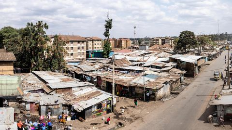 Social Science Research Council |
~100k households (~300k) | Iron sheet shacks, industrial-land plots | Eviction threat (private land), cholera, fires, price exploitation | SPA declared 2017: city-led participatory plan over 650 acres; roads, drainage, water pilot, hospitals [74] | Declare whole settlement a planning area; treat informal economy (US$59m/yr) as evidence of capacity | Decades of organizing: anti-eviction campaigns, "Too Pressed to Wait" women's sanitation campaign; consortium of 40+ organizations co-wrote the plan | PromisingMosque Road pilot: water points + toilets per plot for 1,000 households cut costs and cholera; roads and drains reduced flooding and fires. Implementation now city-led. |
| South Africa | Khayelitsha township + ~1,500 targeted settlements, Cape Town 📍 Google Maps |
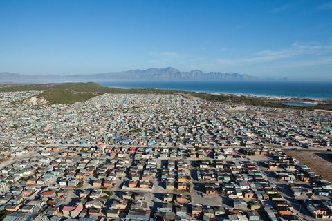 NSL – ETH Zürich |
Khayelitsha ~400k | Corrugated-iron shacks, wood, cardboard | Shack fires, floods, no services, apartheid spatial legacy, violence | RDP free houses (1994), Breaking New Ground + UISP in-situ upgrading (2004), ring-fenced ISUP grant (2020) [7][8][9] | Housing as constitutional right (s26); in-situ upgrading first, relocation last resort; tenure security plus basic services [7][8] | Community consultation mandated in UISP; ward committees; household enumerations; protests as de facto channel [8] | Mixed3M+ free houses built; 84% formal housing now vs 65% in 1996. But RDP houses on far periphery replicate apartheid geography; beneficiaries sell or rent out and return informal. Delivery fell to 23k houses in 2025/26. Shift to upgrading is slow. |
| South Africa | Imizamo Yethu, Cape Town 📍 Google Maps |
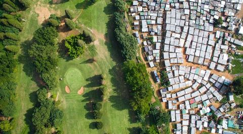 LensCulture |
~30k+ | Corrugated-iron shacks on steep slope | 2017 fire (4,000+ displaced), floods, land conflict | Post-fire reblocking / "super-blocking": reconfigure shacks for roads and services, RDP units [54][55] | Post-disaster reconfiguration for service access | iKhayalami NGO reblocking (same-size shack, new layout); city "super-block" planning; community "development brokers" — contested internally | SlowThree years on, upgrade "almost complete"; violent conflicts over housing lists; internal politics slow reblocking. |
| South Africa | Alexandra, Johannesburg 📍 Google Maps |
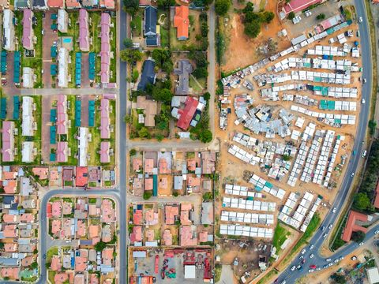 Unequal Scenes |
~180k in 2.7 km²; 350k+ with extensions | Matchbox houses + shacks, yard density | One-room houses, 700 people/hectare, river flooding | Alexandra Renewal Project (2001): national urban renewal node — housing, bridges, parks, sanitation [53] | Presidential urban renewal flagship | Extensive stakeholder forums; phased consultation | MixedNew housing and infrastructure delivered; population grew faster than delivery; backyard densification continues; remains iconic "one square mile" of pressure. |
| Tanzania | Tandale, Manzese and citywide unplanned areas, Dar es Salaam 📍 Google Maps |
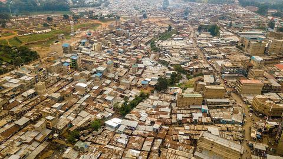 IIED |
~70% of city informal, millions | Mud + poles + iron sheets ("Swahili house"), sand floors | No services, flooding, uncontrolled sprawl — informal areas grew 630% 1982–2022 | 20,000 Plots Programme (2002, delivered 36k+ plots), Residential Licences, MKURABITA titling, Citywide Upgrading Strategy (2007) [10][11][12][13] | Regularization not demolition; enablement — state facilitates, residents and CBOs upgrade; formalized assets as capital (MKURABITA) [11][12] | Stakeholder consultative meetings (wadau); mtaa neighbourhood forums; community contracting for works; reach de facto limited [12] | MixedPlots sold fast, costs recovered, titled land commands 71% price premium. But wealthier households bought plots, occupancy stayed low, speculation. Upgrading tiny vs growth — informal expansion continues anyway. |
| Tanzania | Hanna Nassif, Dar es Salaam 📍 Google Maps |
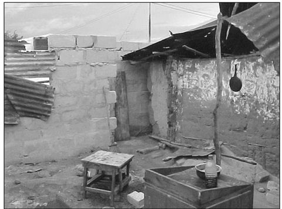 Academia.edu |
~20k+ | Mud + poles + iron sheets, valley floor | Flooding (no drainage), no roads | Community-based upgrading (1994+): residents built roads and drainage with CCT support and municipal engineers [56] | Community as developer; labour-based infrastructure | Residents' organization contracted works; daily contributions; joint planning with Dar municipality — a 1990s model later cited globally | SuccessFirst celebrated community-built roads and drains in Dar; affordability pressure followed — rents rose, poorer tenants pushed to other informal areas. |
| Gabon | Akébé, Nombakélé, PK zones, Libreville 📍 Google Maps |
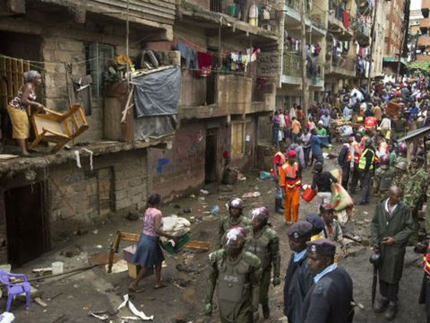 Jeune Afrique |
National slum pop ~790k (39% urban) | Wood plank, earth, corrugated iron | No services, tenure insecurity, demolition risk, decades of under-delivered housing | State housing programmes (3,100 units Bikélé-Nzong + Essassa, 2026), déguerpissement clearances for roads, compensation + SNI plots [14][15][16] | State-provider model; clearance with compensation; modern city image [14][15] | Information meetings; enumeration of affected households; social-case referral — no co-design [15] | FailedHousing agencies under-delivered for decades (ANGT scandal: 60 funded schools never built). Clearances continue; compensation judged too small, rehousing weak, residents protest. |
| Angola | Musseques (Sambizanga etc.), Luanda 📍 Google Maps |
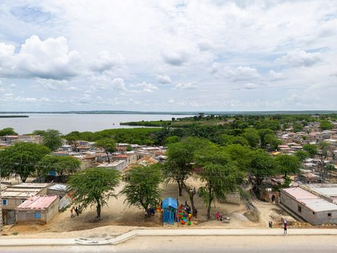 Dezeen |
~8M in musseques | Mud block, zinc sheets, sand floors | No water or sanitation, extreme occupancy, illegal on paper, demolition threat | Tabula rasa: demolish central musseques, build Chinese "centralidades" new towns (Kilamba etc., 2007+), rehouse on outskirts [17][18] | Tabula rasa modernism; state-built mass housing; decongest the centre [17] | None by design — no consultation on demolition or rehousing site; resident associations and rent protests emerged only after relocation [17][18] | FailedTop-down, zero consultation; master plan implied rehousing 5.9M people (86% of Luanda). Kilamba flats unaffordable at first; now 65% of Kilamba and Sequele residents in rent debt. Musseques keep growing. |
| Angola | Kilamba "centralidade", Luanda 📍 Google Maps |
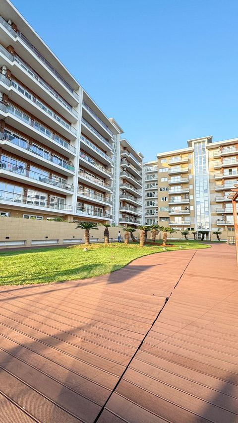 Cozycozy |
20,000 apartments; ~80k residents | Chinese-built concrete towers | Isolation 30 km from centre, rent debt, informal vending | Flagship oil-for-infrastructure new town (built 2008–12); initially priced out, later allocated to civil servants [57] | Supply-side mass housing as showcase | None at planning; allocation via employer queues | Occupied but indebtedBy mid-2010s home to salaried professionals; 65% of Kilamba + Sequele residents in rent arrears (2026) — showcase filled, affordability unresolved. |
| Angola | Chicala, Luanda 📍 Google Maps |
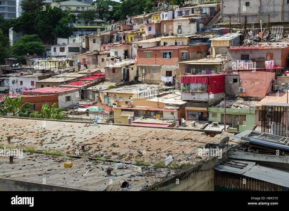 Alamy |
~10k (pre-eviction) | Mud block + zinc, seafront musseque | Central land pressure, forced eviction | Tabula rasa eviction of central seafront musseque; 2026: US$43m private urbanization concession (Lvndo, 10 years) [59] | Land-value capture on cleared prime land | None — evictions without consultation; concession negotiated state–developer | FailedResidents displaced to peripheral housing; seafront now set for private new district — the musseque as city's oldest settlement erased. |
| Zambia | Kanyama, George, Garden compounds, Lusaka 📍 Google Maps |
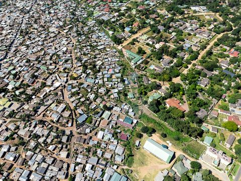 Unequal Scenes |
Kanyama ~250k+; 1973: 1 in 2 Lusaka residents a squatter | Mud block, pole-and-mud, iron sheets | Cholera outbreaks (2017–18, 2023–24), flooding, no drainage, density | World Bank squatter upgrading + sites-and-services (1970s: 17k dwellings serviced, 7,600 new plots) — among the world's first large in-situ programmes [19][20][21] | Upgrading plus sites-and-services; dweller self-management; cost recovery [19][20] | Resident labour contribution; area and water committees; Rakodi's classic study found consultation thin in practice [20] | Early success, stalled1970s upgrading worked where implemented and became a global model. Then cost recovery and standards killed scale. Today over 50% of urban Zambia is informal and cholera returns to Kanyama. |
| Namibia | Katutura + extensions (Havana, Otjomuise), Windhoek 📍 Google Maps |
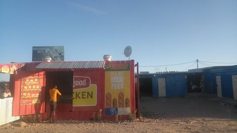 EnergyTransition.org |
Tens of thousands of shack households, fast growth | Corrugated-zinc shacks, wood | No services, multi-year land waitlists, tenure insecurity | Informal Settlement Upgrading Policy (1999): block-by-block; Shack Dwellers Federation (SDFN) co-production, saving groups buy and service own land; PISUP with UN-Habitat [22][23] | Co-production; land before house (affordability ladder); incremental self-help; community-managed finance [22][45] | Strongest model in this table: ~1,000 daily-saving groups (N$48m mobilized); community enumerations and mapping; block-by-block land purchase agreements with the City; Twahangana revolving fund [22][45] | Partial successCo-production praised globally; SDFN delivered affordable land to thousands. But backlog grows faster than delivery, and poorest cannot afford even serviced plots. State now funds mass land servicing. |
| India | Dharavi, Mumbai 📍 Google Maps |
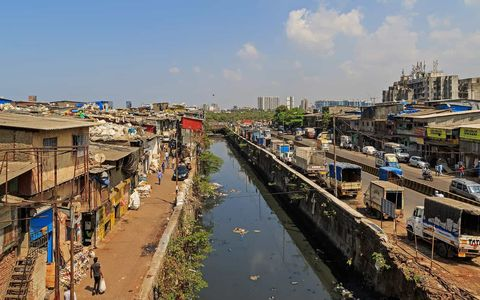 Citizen Matters |
700k–1M on 2.4 km² | Brick + concrete + tin, dense mixed residential-industrial | Highest density in the city, housing mixed with industry, no tenure, pollution | SRA model (1995): developer gets sale FSI, builds free flats for dwellers; Dharavi Redevelopment Project (2004), Adani survey (2024) [24] | Land-as-resource cross-subsidy; free flat for eligible dwellers; cut-off date rule; developer-led execution [24] | Door-to-door eligibility surveys with document submission; NGO mediation historically; now resistance — ~15,000 residents and workshop owners withheld documents citing opaque process [46] | Stalled 20 yearsEligibility cutoff disputes, resident and business resistance; only a fraction rehoused. SRA citywide delivered flats but small units, corruption reports, livelihoods lost when workshops move. Redevelopment still contested. |
| India | Yamuna Pushta, Delhi 📍 Google Maps |
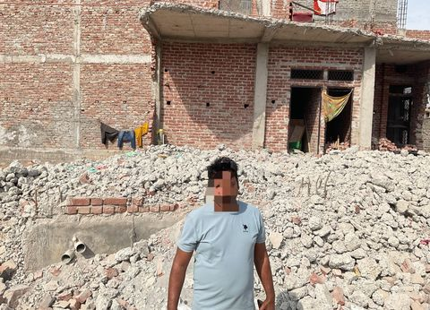 Article 14 |
~300k evicted; 40,000 homes | jhuggi huts: brick + plastic + tin | Riverbed "beautification" framing, floods | 2004 demolition for Commonwealth Games green belt + Games Village; faraway resettlement plots [60][61] | Court-ordered eviction on floodplain legality | Registration forms before demolition; NGO (Hazard Centre) urgent appeals — ignored | Failed40,000 homes razed; incomes of resettled fell ~50%; commutes to work doubled. Textbook destructive eviction for event-driven beautification. |
| UAE | Sonapur / Al Muhaisnah labor camps, Dubai 📍 Google Maps |
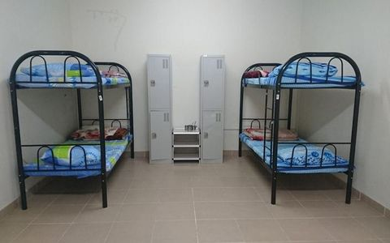 Labor Accommodation Dubai |
Millions of migrant workers nationally; camps 1k–8k each | Portacabin and prefab bunk dormitories, company-built | Overcrowding, extreme heat, wage abuse, fire risk, no family life possible | No slums tolerated: employer-must-house rule, Ministerial Resolution 766/2015 minimum standards, inspections, fines and closure, wage protection system [25][26] | Employer responsibility for housing; regulation plus inspection; no settlement rights for workers [25][26] | None for residents; grievance channel via MOHRE mediation and camp inspection complaints [25][26] | Contained, not solvedTop-tier worker villages good; bottom-tier subcontracted camps still bad (ventilation failures, permit suspensions). Workers can never settle or bring families. The problem is hidden rather than solved. |
| Malaysia | Desa Mentari PPR + former kampung setinggan, Kuala Lumpur / Selangor 📍 Google Maps |
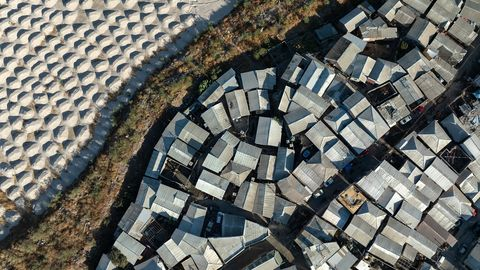 Rice Media |
Tens of thousands of households relocated | Former squatter housing: wood + zinc; replacement: high-rise concrete flats | Open dumping, floodplain occupation, stigma | Zero Squatter (Setinggan Sifar): Selangor 2001, target 2005; demolition + relocation to PPR low-cost high-rise; PPRT programme 1980s+ [27][28][29] | Eradication target on a deadline; homeownership resettlement into PPR flats; subsidized low-cost housing [27][29] | Minimal — notice period plus compensation negotiation; some state-level welfare review; no co-design [29] | Cleared, quality poorSquatter settlements mostly cleared by mid-2000s and the target declared met. But PPR flats meet minimum standards only — bad design, weak facilities, social problems (Desa Mentari study). Hidden squatting persists; states re-pledged zero squatter in 2014. |
| Malaysia | Kampung Baru, Kuala Lumpur 📍 Google Maps |
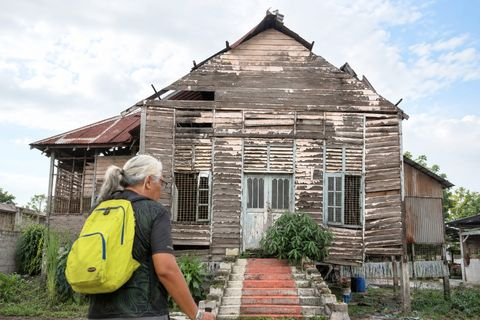 Tour East |
~few thousand residents | Wooden + brick Malay kampong houses | CBD land worth billions frozen in village form | Malay Agricultural Settlement reserve (1900): land held in trust, excluded from redevelopment; repeated redevelopment masterplans stall [62] | Ethnic heritage land protection vs development pressure | Village committee + landowners negotiate with KL City Hall; consensus rarely reached | FrozenLast large kampong in city centre surrounded by skyscrapers; redevelopment plans (2020 vision etc.) repeatedly stall on fragmented ownership and heritage claims. |
| Singapore | Bukit Ho Swee kampong (historic), Singapore 📍 Google Maps |
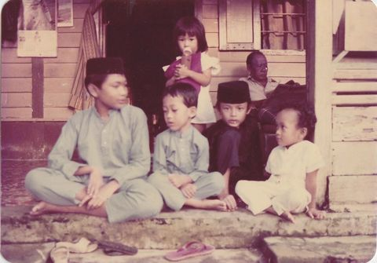 Rice Media |
1961: 16k homeless in one night; squatters a large city share | Attap thatch, wood, zinc kampong dwellings | Fires 2–3 times a year, no sanitation, congestion | HDB public housing (1960), Land Acquisition Act (1966), mass resettlement, 99-year-lease flats sold via CPF [30][31] | Homeownership society; 99-year leasehold flats; land acquisition for public purpose; multiracial integration quotas [30][31] | Minimal in the 1960s — fixed resettlement terms, resettlement census surveys; later MPs' meet-the-people sessions and town councils [30][47] | Success — global benchmark1961 fire became the push: victims rehoused within a year, then rolling resettlement. Squatters gone by the 1980s. ~80% of residents live in HDB, ~90% homeownership. Cost: kampong community and culture erased. |
| Singapore | Kampong Lorong Buangkok 📍 Google Maps |
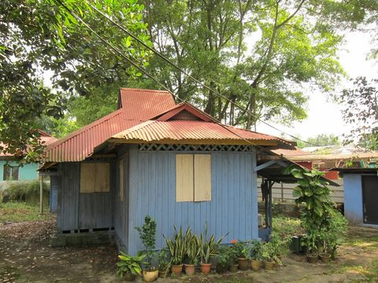 citydays.com |
28 households (peak 40 families) | Wooden + zinc kampong houses | Floods; redevelopment imminent since 2000s | Tolerance of last mainland kampong; land earmarked by URA; S$10m flood defence declined as "impractical" [63] | Benign neglect of a residual anachronism | Headman manages village affairs; heritage campaigners advocate conservation | Hanging onLast rural village survives on rented land; demolition deferred repeatedly; public nostalgia grew — a museum of the housing past HDB erased. |
| China | Baishizhou urban village, Shenzhen 📍 Google Maps |
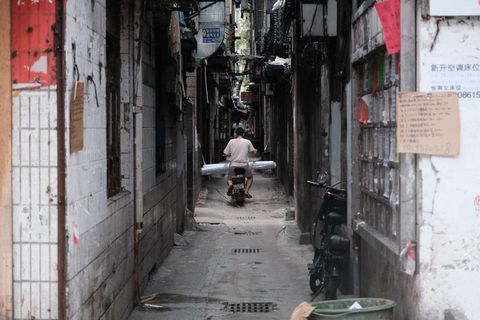 The World of Chinese |
150k in ~0.6 km²; urban villages house 10M+ citywide | "Handshake" brick-concrete blocks 7–8 floors, villager-built | Fire risk, density, poor sanitation — yet the city's only affordable migrant housing | Urban village redevelopment: 2019 demolition + LVGEM rebuild, big landlord compensation; hukou blocks migrant access to city services; 2023 national urban-village renovation push [32][33] | Property-led redevelopment; market-multiple compensation to landlords only; hukou excludes migrants from services [32] | Negotiation between the village collective (~1,100 landowners) and the developer; ~149,000 renters excluded — eviction notice, no seat at table [32][48] | In progress — displacementDemolition ongoing since 2019; media counted 1,878 landlord millionaires. Migrants lose housing: 28% of Baishizhou residents would leave Shenzhen, 51% face longer commutes. Vanke's no-demolition rental plan was abandoned. |
| China | Tangjialing, Beijing 📍 Google Maps |
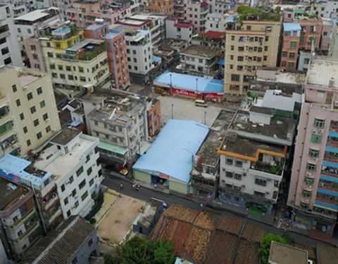 ONCURATING |
Peak ~50k migrant renters ("ant tribe") | Villager-built walk-ups + rooftop extensions | Overcrowded cheap rentals for degree-holding migrants | 2010 demolition + redevelopment for a hi-tech park; tenants pushed to more distant villages [48] | Urban regeneration displaces low-cost rental substrate | None for renters; village landlords negotiated compensation | DisplacementThe "ant tribe" node erased; migrants relocated further out, commutes longer — the affordability ladder kicked away one rung at a time. |
| Spain | Cañada Real Galiana, Madrid 📍 Google Maps |
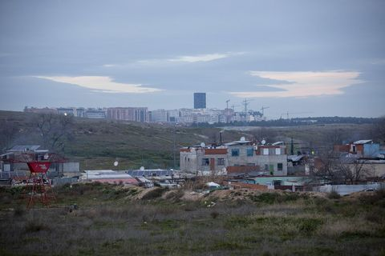 El Salto |
~8,000 (4,500 in the cut-off sectors); 39% Roma | Shacks, improvised brick/block, caravans, some solid houses | No legal electricity for 4+ years (cut 2020), no tenure, drug market in sector 6, evictions | 2017 closure + rehousing plan for sector 6; inter-ministerial group (2021); social housing promises; partial power restoration [34][35][36][37] | Right to housing vs illegality tension; sector-by-sector negotiated closure; energy justice [34][36] | Roundtables per sector with resident associations and NGOs; UN and Council of Europe rapporteurs as external voice [36][37] | Failed so farEuropean Committee of Social Rights ruled (Feb 2025) Spain violates the Charter — no decent housing, no electricity. Rehousing slow, families wait years. Largest shantytown in Western Europe persists. |
| Spain | El Camp de la Bota / Somorrostro, Barcelona 📍 Google Maps |
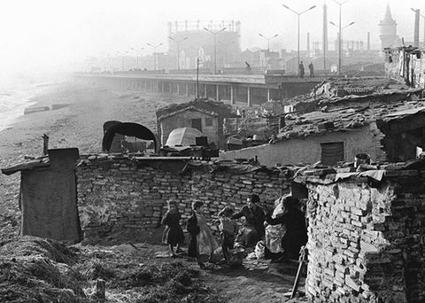 Tot Barcelona |
Barracas held thousands into the 1960s–80s | Wood + brick + zinc barracas | Shanties on beach and fringe; no services | Progressive barraca clearance with rehousing to peripheral estates (1950s–70s); final clearance for 2004 Universal Forum of Cultures site [64] | Event-led erasure of shantytowns; rehousing to suburbs | Neighbourhood associations from barraca origins seeded later city movements — after displacement | ErasedBaracas gone; Forum park + universities on site; ex-barraca families in Besòs estates fought stigma for decades. Barcelona's shanty past is now museum memory. |
| Spain | El Pozo del Tío Raimundo, Madrid 📍 Google Maps |
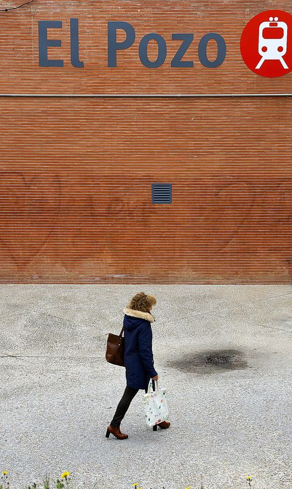 El Mundo |
Chabola settlement of thousands (1950s–60s) | Self-built brick + zinc chabolas on clay pits | No water, no schools, extreme poverty | Integration not eviction: Father Llanos settled with residents (1958); parish-led schools, then municipal housing; barrio consolidated [65] | Accompaniment and integration; self-help with rights claims | Priest-organized community; residents' associations; church as broker with Franco-era municipality | SuccessChabolas became a consolidated working-class barrio with metro and services; model of integration versus clearance — the counter-example to Cañada Real in the same city. |
| Mexico | Ciudad Nezahualcóyotl (Neza), Mexico City metro 📍 Google Maps |
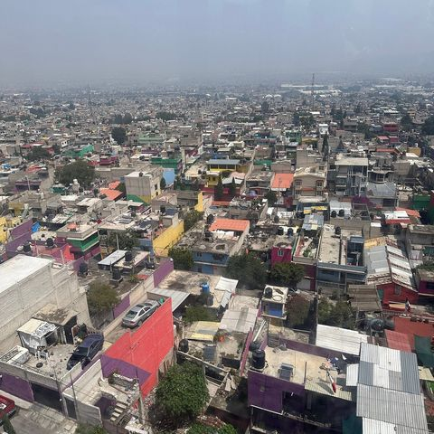 Tripadvisor |
1.1M–1.5M on 25 km² of drained lakebed | Self-built cinderblock + concrete; early phase cardboard and metal | Decades without water/sewer, lakebed flooding and sinking, poverty, crime | Regularization, not demolition: land titles, municipality created 1963, service investment 1970s–80s, CORETT/PASPRAH/PRAH title programmes, Piso Firme cement floors (2007–13, US$1.27B national) [38][39][40][41][42] | Regularization plus self-help consolidation; tenure first, services follow; municipalization of the settlement [38][39] | Land committees and neighbourhood assemblies negotiating services; collective regularization pressure; Piso Firme floors self-installed by owners [40][41] | SuccessNeza became a formal municipality with services, consolidated into the metro area — a textbook regularization model. Piso Firme delivered proven health gains in a randomized evaluation. Residual pockets and title disputes remain. |
| Mexico | San Andrés Chimalhuacán 📍 Google Maps |
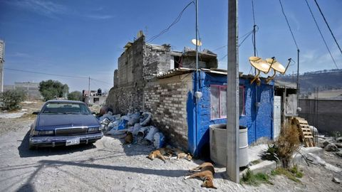 Orange County Register |
~600k | Self-built cinderblock on lakebed | No services for decades, flooding, still low-income | Ejido-land self-occupation (1960s–80s) then incremental regularization: titles, water, paving [38][39] | Self-build on communal land; regularization follows settlement | Ejido assemblies negotiated land; street committees pressured for services | Incremental successTwin of Neza on the same lakebed; regularized into a functioning municipality — slower and poorer than Neza, proof regularization works but takes decades. |
| Thailand | Khlong Toei + Baan Mankong, Bangkok 📍 Google Maps |
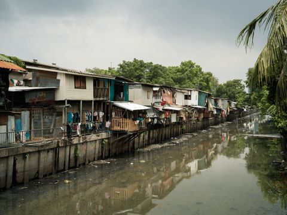 Note |
Khlong Toei ~100k; programme 142,254 households nationwide | Wood + concrete + tin, canal-side | Port-authority land tenure threat, fires | Baan Mankong (2003): national collective tenure + upgrading subsidy direct to community groups; city-wide surveys [66] | Government as enabler; communities control finance and form; legal umbrella for informal settlements | Community savings groups, enumeration surveys, collective land purchase or lease negotiation; CODI board seats for the poor | Success at scale142,254 households in 1,246 projects across 75 provinces (2024) — the world's largest community-managed upgrading programme; Khlong Toei itself upgraded only partially (port land veto). |
| Indonesia | Kampung Improvement Programme, Jakarta 📍 Google Maps |
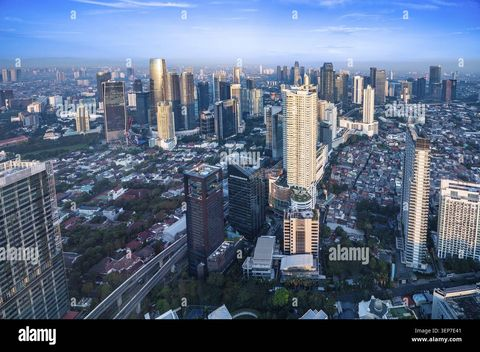 Alamy |
Millions in kampungs; 1,980 ha upgraded 1974–76 alone | Tile-roof brick kampung housing | Dense unserviced lanes, flooding | KIP (1969+): lane paving, water taps, drains, schools into existing kampungs — no demolition; longest-running World Bank-supported programme [67] | In-situ incremental improvement of what people built | Kampung-level consultation; later community-driven KIP variants | SuccessUpgraded thousands of hectares at world's lowest per-capita cost; kampungs stayed — later threatened by riverbank evictions and "vertical kampung" plans, not by KIP failure. |
| Philippines | Smokey Mountain, Tondo, Manila 📍 Google Maps |
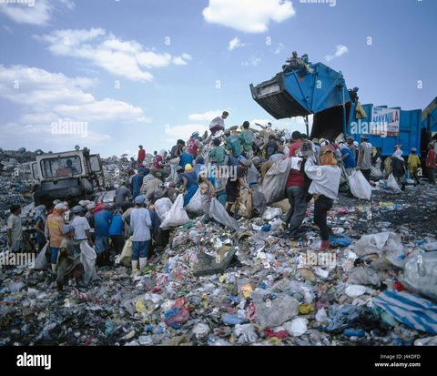 Alamy |
~30k scavengers at peak | Scrap shacks on and around landfill | 50 years of burning waste, deaths, extreme stigma | Landfill closed 1995; NHA–private JV housing towers built on the capped dump for scavengers [68][69] | Landfill-to-housing land swap with private financing | Beneficiary screening for on-site rehousing; church and NGO intermediaries | Half-solvedTowers rose on the garbage mountain; many couldn't afford amortization and moved across the road to the next dump ("Promised Land", Payatas). Problem relocated, not solved. |
| Pakistan | Orangi Pilot Project, Karachi 📍 Google Maps |
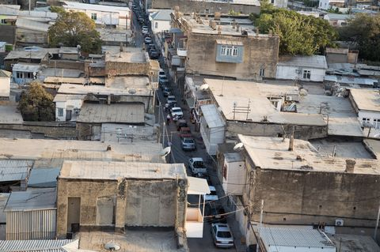 Chai Khana |
1.5m+ in Orangi Town | Self-built stone + block houses, unserviced lanes | No sewerage, open drains | OPP (1980): residents finance and build lane-level sewerage; state only provides trunk infrastructure [70] | Division of labour: people do what they can (lanes), state does what it must (trunks) | Lane committees collect funds, map and manage construction; OPP research arm trains | Success90%+ of Orangi self-financed sewers at ~10% of government cost; model replicated across Pakistan and beyond. The reference case for self-financed sanitation. |
| Bangladesh | Korail, Dhaka 📍 Google Maps |
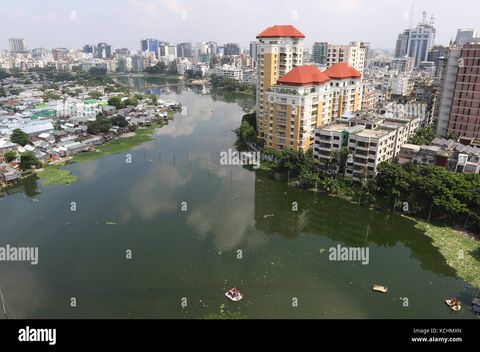 Alamy |
~100k+ | Tin + brick, lake edge | Eviction fear (government land), fires, no services | Court battles instead of policy; fire responses; small NGO upgrading pilots [79] | Ad hoc | Residents' associations fight court cases; fire relief committees; incremental self-help | ContestedDhaka's largest slum survives via litigation; fires repeatedly burn hundreds of homes; no state upgrading programme of scale has ever been attempted. |
| Ghana | Old Fadama / Agbogbloshie, Accra 📍 Google Maps |
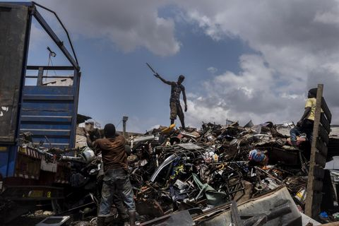 Equal Times |
~80k pre-demolition | Scrap + tin shacks around e-waste scrapyard | Toxic burning, state hostility, no services | Successive demolition threats; 2015 partial demolition; full clearance July 2021 of scrapyard + settlement, "to make Accra clean" [71][72] | Urban revanchism — city image over people | Amnesty + UN-Habitat called for pre-notification and compensation — none provided | FailedDemolition without consultation, resettlement or compensation; thousands scattered to Accra's periphery; recycling livelihoods destroyed. Illegality of settlement used to void all obligations. |
| Nigeria | Makoko, Lagos 📍 Google Maps |
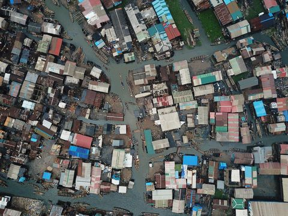 Humanitarian OpenStreetMap Team |
~100k+ (land + water) | Stilt houses on lagoon, timber + zinc, canoes | Waterborne disease, school access, state denial of existence | 2012: demolition of the water settlement ("eyesore" on lagoon frontage); NGO responses instead of policy [73] | Slum-free megacity vision; erasure over servicing | None for demolition; afterwards: community-built Floating School (2013) as advocacy — collapsed in storm 2016 | FailedHundreds of stilt homes razed in 48 hours; no rehousing plan; the community's own celebrated prototype (Floating School) collapsed — global attention, zero policy change. |
| Egypt | Manshiyat Naser (Garbage City), Cairo 📍 Google Maps |
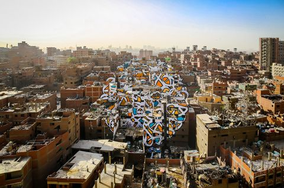 ideas.ted.com |
~60k mostly Coptic Zabbaleen | Brick self-build into cliff, livestock on roofs | Waste-handling stigma, no tenure, state invisibility | Tolerated as city's informal waste system; failed resettlement attempts to desert sites; post-2011 subcontracting collapse | Tolerance through economic usefulness | Zabbaleen syndicates negotiate waste contracts; church structures anchor community; TED-lit murals (2015) reframed image | ToleratedRecycles a third of Cairo's waste at no state cost; resettlement attempts failed because livelihood = proximity to collection circuits. Invisible in law, indispensable in function. |
| Argentina | Villa 31 / Barrio Mugica, Buenos Aires 📍 Google Maps |
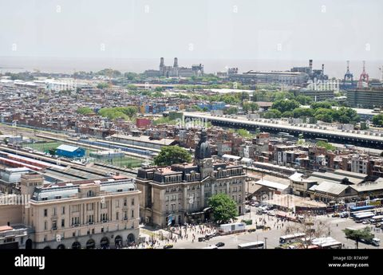 Alamy |
~40k | Brick + concrete, dense self-build beside port | 50 years of demolition threats, isolation by highways | Urbanization Law (2009) + Integration Plan (2016): services, streets, 1,200+ new homes, schools, title pathway [58] | Integration into the formal city in place — rights and responsibilities together | Community assemblies per sector; extensive surveys; co-designed public works | Success so farStreets, sewage, schools arrived; titles being granted; risk now is real-estate pressure on land the poor finally own. Latin America's flagship in-situ integration. |
| Peru | Villa El Salvador, Lima 📍 Google Maps |
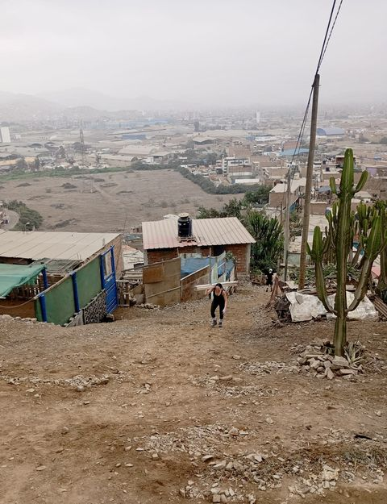 Project Peru |
25k (1971) to 350k+ (2008) | Mats + wood shanties to brick housing, desert grid | Sand desert, nothing at start, Shining Path violence | State relocated 1971 land invasion to planned desert site; self-managed grid + services via collective organization; district by law 1983 [77][78] | Planned invasion-to-district pathway; self-management (autogestión) | Fepomuves women's federation (kitchens, milk programme); neighbourhood assemblies; Maria Elena Moyano's leadership — murdered by Shining Path 1992 | SuccessFrom empty sand to a city district with housing, industry and university; Prince of Asturias Award 1987. The world's reference for organized land invasion converted into a formal district. |
| Myanmar | Hlaing Tharyar township, Yangon 📍 Google Maps |
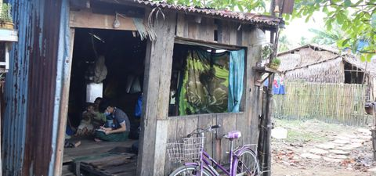 Tdh.org |
181 informal settlements; 24,865 households (~124k) | Wood + bamboo + thatch + tin | No services, fragile tenure (59% squat, half of "owners" undocumented), eviction waves | Military-era peripheral resettlement; 2016 clearance of "555" + low-cost housing at $20,000; UN-Habitat YIS-RP survey + upgrading pilots (2020) [80][81] | Resettlement to industrial periphery; "squatter" illegality framing | UN-Habitat household surveys and settlement histories; community enumeration pilots — policy swings with each government | Failed555 settlement evicted after sudden headcounts; promised $20k flats unaffordable for the 40% who are poor; residents with documents still evicted; programme stalled after the 2021 coup. |
| Cambodia | Dey Krahorm, Boeng Kak, Borei Keila, Phnom Penh 📍 Google Maps |
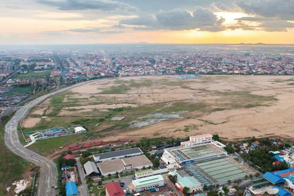 Eco-Business |
Dey Krahorm ~1,400 families pre-eviction | Wood + brick shophouses on prime central land | Land speculation, forced eviction, compensation far below market | Land swaps with private developers: 7NG at Dey Krahorm, Shukaku 99-year Boeng Kak lease, Phan Imex on-site flats at Borei Keila [82][83] | Land-as-resource for private development; eviction-based transfer | Longest community resistance in Cambodia (2005–09): residents fired complicit representatives, elected new ones; Boeng Kak women-led protests | FailedRiot police razed Dey Krahorm Jan 2009; compensation ~$200/m² vs $2,000 market; relocation 20 km out with no services — land itself disputed, secondary evictions followed; Boeng Kak homes destroyed by sand-pumping. |
| Sri Lanka | Underserved settlements + canal reservations, Colombo 📍 Google Maps |
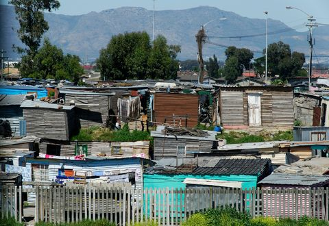 codata |
1,735 settlements, 123,185 families (2012) | Plank + tin shacks on canal reservations | Flood risk (obstructed canals), disease, eviction threat | Million Houses Programme self-help (1984); flood-risk relocation to flats since the 1990s; post-2015 beautification acceleration [84] | Flood-risk-reduction framing; self-help tradition eroded by relocation | Sevanatha NGO + municipal surveys; community development councils | MixedRelocation flats cut flood exposure but distant blocks broke livelihoods; study calls for pre/during/post-relocation guidelines that were missing; tens of thousands still on canal reservations. |
| Mongolia | Ger districts, Ulaanbaatar 📍 Google Maps |
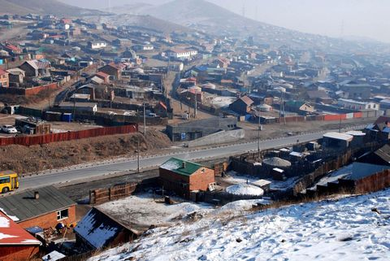 Divisare |
~800k (60% of city, 25% of country) | Felt gers + self-built houses in fenced plots (khashaa) | No water, sewer or central heating; coal-stove smog — world's worst winter PM2.5 | ADB Urban Services & Ger Areas Development Investment Program (2013+): sub-center service hubs, roads, schools, 3 tranches over 9 years [85] | Treat districts as permanent; build service sub-centers instead of wholesale redevelopment | Khoroo (district) consultations; community input into sub-center siting | In progressSub-center roads, water and schools delivered in Bayanzurkh and elsewhere; scale is enormous versus a 9-year program; the winter air-pollution crisis persists. |
| Vietnam | Canal-side slums, Ho Chi Minh City 📍 Google Maps |
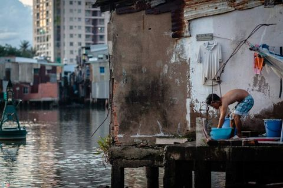 Klook |
40,000 canal houses citywide; 44,300 families relocated since 1993 | Makeshift stilt houses over water, scrap + sheet | Severe water pollution, flooding, sanitation | Canal sanitation + urban renewal: clear slums, dredge and embank canals, resettlement flats; financed by auctioning reclaimed land (US$4bn plan for District 8's 15,000 families) [86] | Environmental restoration as relocation driver; land-value capture | Household-by-household compensation negotiation; no community-level planning | MixedNhieu Loc–Thi Nghe transformed from open sewer with slums to green waterfront; but 2025 reports: compensation too low to buy replacement flats; 20,000 remaining houses targeted by 2030. |
Population figures are estimates and vary widely by source; ranges are given where counts are contested. Cases selected for being outstanding — largest, most cited, or most instructive in outcome — not as a random sample. Verdict badges summarise the dominant evidence in the cited sources. Page compiled 16 October 2026. Image thumbnails link to their original full-resolution files; credits shown below each thumbnail.